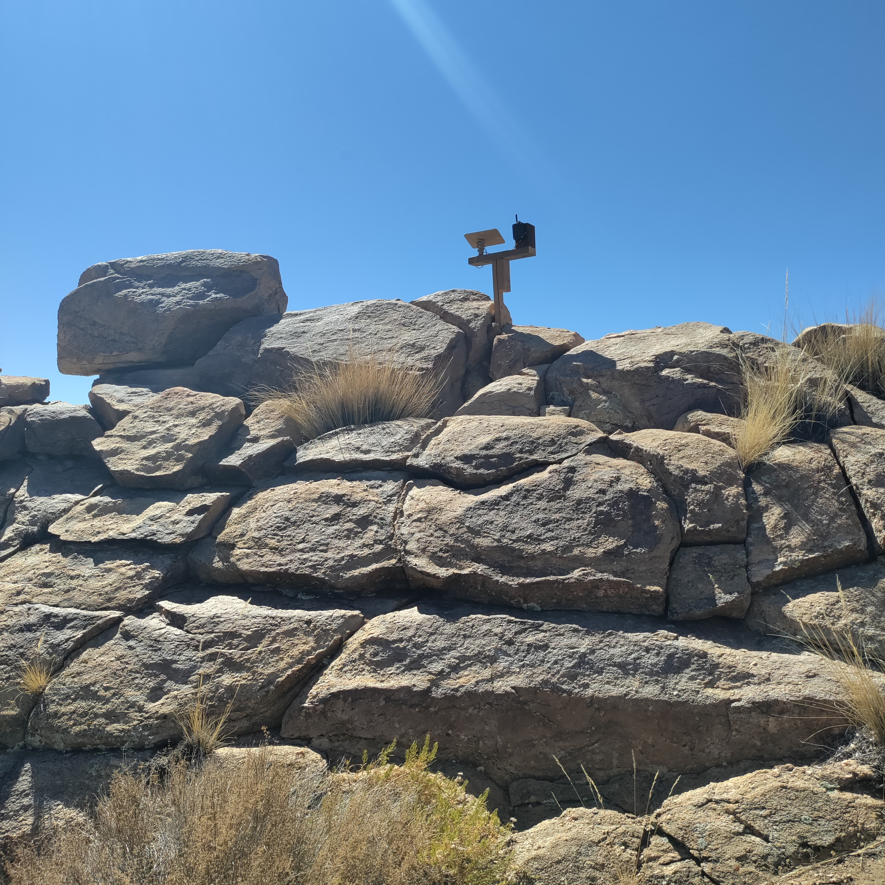

Collection
Field instruments
Water level, soil moisture, temperature, motion, weather, battery state, and future measurements.
Measurement & Memory
Home Assistant, MQTT, ESPHome, environmental sensors, dashboards, photographs, and the local computers that preserve observations.

Collection
Water level, soil moisture, temperature, motion, weather, battery state, and future measurements.
Movement
Readings travel through serial links, ESP32 devices, Ethernet, Wi-Fi, PoE, and message brokers.
Display
Current states, histories, alerts, and comparisons can become evidence for later reports.
Memory
Photographs retain visual context while the workbook preserves meaning, uncertainty, and revision history.
Field Reports

Sensors & Data · Boulder Gardens Sanctuary
Boulder Gardens uses Meshtastic to connect people, vehicles, remote sensors, and fixed relay stations across 640 acres of rugged desert terrain. Five fixed stations and four mobile GPS-equipped radios form the core of the network.
Read the full observation →
Sensors & Data · Hilltop
Inspected and documented the hilltop Internet relay station that connects Mojave WiFi with the Bus area and the Boulder Gardens Command Center.
Read the full observation →
Energy · Command Center
Six solar panels, a LiFePO₄ battery bank, and a Schneider inverter form the electrical heart of the Boulder Gardens Fieldstation.
Read the full observation →